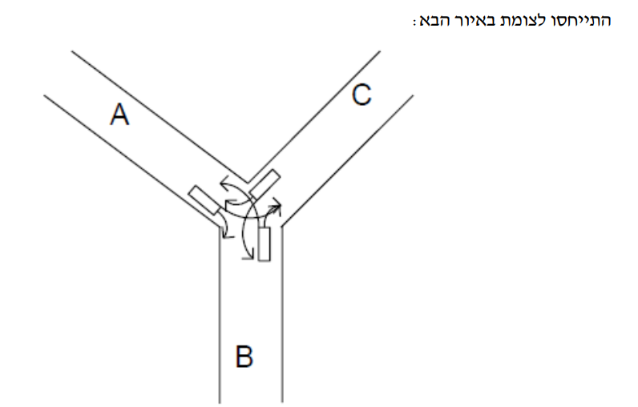

שאלה 1 (5 נקודות)
רמז
מערכת הפעלה מונוליתית כוללת את כל רכיבי הליבה (כמו ניהול זיכרון, דרייברים, מערכת קבצים) במרחב זיכרון אחד משותף. היתרון העצום של זה הוא שאין צורך במעברי הקשר (Context Switches) מורכבים או הודעות IPC בין מודולים. הכל רץ באותו מרחב. לכן התקורה (Overhead) של התקשורת בתוך הליבה היא מזערית. חיסרון? קריסה ברכיב קטן תקריס את כל המערכת (Kernel Panic).
כאשר מדובר על מבנה, מונוליתי של מערכת הפעלה מהי התכונה אשר מהווה יתרון מובהק של המודל ביחס למודלים אחרים?
פתרון מלא
התשובה הנכונה היא א'.
במודל מונוליתי, הליבה היא תוכנית אחת ענקית שרצה כולה במרחב כתובות אחד. כל הקריאות בין תתי-המערכות מתבצעות כקריאות פונקציה רגילות ב-C, ללא מנגנוני העברת הודעות (IPC) מסורבלים (כמו שקורה ב-Microkernel), ולכן התקורה היא אפסית.
ב. קריאות מערכת תמיד ידרשו מעבר ל-Kernel Mode בכל ארכיטקטורה.
ג. תקשורת בין תהליכי משתמש אינה קשורה לארכיטקטורת פנים-הליבה.
ד. להיפך, מודל מונוליתי רגיש יותר לקריסות (כמו מסך כחול) מכיוון שכל מודל לא יציב עלול לדרוס זיכרון קריטי בליבה.
שאלה 2 (5 נקודות)
רמז
יש שני סוגי Hypervisors. סוג 1 (Bare Metal) רץ ישירות על החומרה בלי מערכת הפעלה תחתיו (כמו ESXi). סוג 2 (Hosted) מותקן כתוכנית רגילה על גבי מערכת הפעלה מארחת קיימת (כמו VirtualBox על ווינדוס). המערכת המארחת שולטת בחומרה ורצה במצב קרנל. המערכת האורחת (Guest OS) רצה למעשה כאפליקציה במצב משתמש (User Mode) מנקודת המבט של המערכת המארחת, ומתרגמת את קריאותיה.
מה מבין המסיחים הבאים נכון לגבי רב-פקח HYPERVISOR מסוג 2 בתצורת HOSTED?
פתרון מלא
התשובה הנכונה היא ב'.
ב-Hypervisor מסוג 2, המערכת המארחת שולטת באופן מוחלט בחומרה ורצה במצב Kernel. ה-VM וה-Guest OS שבתוכה רצות כולן כתהליך משתמש רגיל (User Mode) מבחינת המערכת המארחת. כשמערכת ההפעלה האורחת מנסה לבצע פקודה פריבילגית, ה-Hypervisor לוכד אותה (Trap).
א. החומרה נשלטת בלעדית ע"י ה-Host OS.
ג. המכונה הוירטואלית מדמה מחשב שלם. אפשר להתקין בה כל OS ואפליקציה, למשל לינוקס על גבי ווינדוס מארח.
ד. זה נכון לגבי קונטיינרים (כמו Docker), לא למכונות וירטואליות.
שאלה 3 (5 נקודות)
רמז
בניהול זיכרון וירטואלי, לכל תהליך יש טבלת דפים משלו הממפה כתובות וירטואליות למסגרות זיכרון פיזיות (Frames). זיכרון משותף (Shared Memory) אומר ששתי טבלאות דפים של תהליכים שונים מכילות רשומות המצביעות לאותה מסגרת פיזית בדיוק. האם הכתובת הוירטואלית עצמה חייבת להיות זהה? לא! דף וירטואלי 10 אצל א' יכול להצביע לאותה מסגרת פיזית כמו דף וירטואלי 50 אצל ב'.
במערכת הפעלה המנהלת את זיכרון ראשי כזיכרון וירטואלי, ע"י מערכת ההפעלה נוצר איזור זיכרון משותף SHARED MEMORY בין שני תהליכים. במצב זה:
פתרון מלא
התשובה הנכונה היא ד'.
מיפוי זיכרון וירטואלי מפריד מוחלטת בין מרחב הכתובות הוירטואלי לפיזי. טבלאות הדפים של שני התהליכים מצביעות לאותה מסגרת פיזית (Physical Frame). האזור יכול להיות ממופה לכתובות וירטואליות שונות לחלוטין בכל אחד מהתהליכים.
א. שגוי בפירוש, לכל תהליך מרחב כתובות עצמאי לחלוטין. ה-OS מקצה כתובת פנויה לכל אחד בנפרד.
ב. הגישה בזיכרון וירטואלי נעשית תמיד דרך כתובת וירטואלית וה-MMU מתרגם אותה בחומרה.
ג. זיכרון משותף יכול להתבצע בין כל שני תהליכים נפרדים באמצעות מזהה משותף (Shared Memory Object).
שאלה 4 (5 נקודות)
רמז
טבלת דפים מכילה רשומה (PTE) עבור כל דף במרחב הכתובות הוירטואלי. אם נחשוב על זה: (כמות הרשומות בטבלה) = (גודל מרחב הכתובות הוירטואלי) חלקי (גודל דף). מה שמגדיר את הגבול העליון של מרחב הכתובות הוירטואלי הוא פשוט אורך הכתובת הוירטואלית! (למשל, 32 ביט מאפשרים מרחב של 4GB).
מה מבין המפורט משפיע ביותר על גודל טבלת הדפים בהנחה שכל תהליך מקבל את כמות הזיכרון הוירטואלי המרבית האפשרית במערכת?
פתרון מלא
התשובה הנכונה היא א'.
המרחב המקסימלי שכל תהליך מקבל נגזר ישירות מ- "אורך הכתובת הוירטואלית". מכיוון שהטבלה צריכה להחזיק כניסה עבור כל דף וירטואלי פוטנציאלי במרחב הכתובות (בהנחה שאין טבלה מדורגת הדינמית בגודלה, ואנו מתייחסים לטבלה מלאה), כמות הדפים נקבעת ממרחב זה.
ב ו-ד. הזיכרון הפיזי או מסגרות ה-RAM אינן משפיעות על כמות הדפים *הוירטואלים* שקיימים בתהליך, אלא רק על רוחב השדה (מספר המסגרת) בתוך רשומת ה-PTE.
ג. השאלה אומרת שכל תהליך מקבל את "המרחבית האפשרית המקסימלית" ולכן השימוש בפועל לא משנה בשאלה הספציפית הזו.
שאלה 5 (5 נקודות)
רמז
איך המערכת מעבירה את ה-CPU בין תהליכים? פסיקת שעון (Timer Interrupt) שקופצת לקרנל כדי לעשות Context Switch. לכן, אם תהליך מכבה פסיקות (CLI) - הוא מונע מהשעון לצלצל והופך ל"שליט יחיד" במעבד. אבל! במעבד מרובה ליבות (Multicore), כיבוי פסיקות משפיע רק על הליבה המבצעת את הפקודה. ליבות אחרות ימשיכו לעבוד כרגיל ויוכלו להיכנס בו-זמנית לאותו הקוד.
האם חסימת פסיקות יכולה לשמש כמנגנון למניעה הדדית?
פתרון מלא
התשובה הנכונה היא ג'.
במעבד בעל ליבה יחידה, חסימת פסיקות מונעת לחלוטין את פעולת ה-Scheduler (המחלק זמני מעבד), ולכן התהליך לא יקופח באמצע הקטע הקריטי. במערכת מרובת ליבות, זה עובד רק ברמת הליבה המקומית, ושאר הליבות יוכלו להריץ תהליכים מתחרים שידרסו את הנתונים, ולכן חסימת פסיקות לא מספיקה במעבד כפול ליבות (שם נשתמש ב-CAS או Spinlocks).
א ו-ב. התשובות الجורפות פוסלות את ההבדל הקריטי בין מעבד יחיד לריבוי ליבות.
ד. זה אינו קשור למניעה הדדית בין חוטים/תהליכים אלא להגבלה חומרתית בסיסית.
שאלה 6 (5 נקודות)
רמז
במערכת I-Nodes, בלוקי נתונים לקובץ גדול מוקצים בעזרת מצביעים (ישירים, עקיפים-בודדים ועקיפים-כפולים). כאשר אנו ניגשים לקובץ ענק ורוצים בלוק אמצעי (גישה אקראית), יש לנו 2 אפשרויות למיקומים הפיזיים: 1. שמירה ברצף. 2. פיזור רנדומלי על הכונן. קובץ השמור ברצף נהנה ממטמון הדיסק (Locality). כשקוראים בלוק אחד, בקר הדיסק שואב מראש למטמון (Read-Ahead) את הבלוקים הסמוכים והמצביעים העקיפים, וגישה לאחר מכן תהיה ב-Cache Hit מיידי. כונני דיסק מאוד אוהבים רציפות.
מה מבין המשפטים הבאים נכון לגבי מערכת קבצים מבוססת על I-Nodes?
פתרון מלא
התשובה הנכונה היא ג'.
קובץ שנשמר ברצף נהנה מתכונת ה-Locality (מקומיות הייחוס). זה אומר שמערכת ההפעלה ובקר הדיסק יכולים להביא בלוקים מראש למטמון הזיכרון (Read Ahead). בנוסף, טעינת מצביעי ה-I-Node העקיפים תהיה רציפה ומהירה. גישה לאקראית בדיסק מפוזר דורשת המון זמן חיפוש (Seek Time) גם עבור המצביעים וגם עבור הנתון.
א. שגוי. גודל מבנה ה-I-Node קבוע לחלוטין במערכת הקבצים ואינו משתנה בהתאם לגודל הקובץ.
ב. ברוב מערכות I-Node רגילות (בניגוד ל-NTFS) נתונים לא נשמרים בתוך מבנה ה-Inode, אם כי מערכות מודרניות כמו Ext4 הוסיפו Fast Symlinks/Inline data, אבל זו אינה ההגדרה הקלאסית.
ד. משפט מסורבל. קובץ ששמור ברצף בדרך כלל מאיץ את הקריאות באופן משמעותי.
שאלה 7 (25 נקודות)
התייחסו לצומת באיור הבא מכוניות מגיעות לצומת דרך הכבישים המסומנים כ A, B ו-C בעלי נתיב תנועה יחיד בכל כיוון, וממשיכות משם בפנייה שמאלה או ימינה. כך מכונית המגיעה מכביש A ופונה ימינה עוברת לכביש B ואם היא פונה שמאלה היא עוברת לכביש C, וכן הלאה. בצומת אין כל אמצעי לבקרת תנועה. כל מכונית יודעת באיזה כביש היא נמצאת ולאיזה כיוון היא רוצה לפנות. המכוניות בכל כביש מגיעות אחת אחת (בכל כביש יכולות להיות כמה מכוניות) ומבצעות פרוצדורה בשם LEFT או RIGHT כדי לפנות שמאלה או ימינה בהתאמה, תוך העברת זהות הכביש שממנו הן מגיעות כארגומנט. לכן, מכונית המגיעה מכביש B ומעוניינת לפנות שמאלה לדוגמא, תבצע את הפעולה LEFT(B).

א. (12 'נק) ממשו בפסודוקוד או בשפת C בעזרת כמות מינימלית של סמפורים בינריים (כולל הכרזות וקביעת ערכים התחלתיים) רק את הפרוצדורות LEFT(R) ו-RIGHT(R) כש-R הוא אות הכביש שממנו מגיע המכונית. הניחו שקיימת פונקציה ShortMove() ללא פרמטר המאפשרת התקדמות קצרה בתוך הצומת עד התנגשות אפשרית הבאה בתוך הצומת עם מכונית שבאה מכיוון אחר. לדוגמא, המכונית המגיעה מכביש B, בפנייתה ימינה יכולה להתנגש ממכונית המגיעה מכביש A ופונה שמאלה ובפנייתה שמאלה יכולה להתנגש במכונית המגיעה מכביש C ופונה ימינה. הפתרון צריך לאפשר מקביליות מרבית, למנוע התנגשויות אפשריות וקיפאון, אך אינו צריך למנוע הרעבה (מעבר למה שסמפור סטנדרטי כבר מונע מעצמו).
רמז - חשיבה לוגית לסנכרון
יש לנו 3 נתיבים יוצאים מתוך הצומת: חזרה ל-A, ל-B, ול-C. התנגשויות מתרחשות *אך ורק* אם שתי מכוניות שונות (שמגיעות מכבישים שונים) מנסות להיכנס לאותו נתיב יעד (כביש יוצא) בו-זמנית! למשל, מכונית מ-B הפונה ימינה רוצה להיכנס לכביש C. מכונית מ-A הפונה שמאלה גם היא רוצה להיכנס לכביש C! פה תתרחש התנגשות. כדי למקסם מקביליות, אסור לנו לנעול את כל הצומת (סמפור בודד). עלינו לנעול רק את *נתיב היעד*. כלומר, מכונית שמבקשת להיכנס לצומת חייבת לתפוס קודם את הבעלות על הנתיב שאליו היא רוצה להגיע. אם אנו צריכים לנעול כל נתיב יעד בנפרד, ואין לנו צורך להגן על פניות שלא מתנגשות, המינימום יהיה 3 סמפורים בינאריים - אחד לכל כביש (A=0, B=1, C=2).
הצג פתרון סעיף א'
מנגנון פתרון:
נשתמש במערך של 3 סמפורים בינאריים, שכל אחד שומר על כביש היציאה מהצומת. כך נמנע ממכוניות להתנגש בכניסה לאותו הכביש, אך נאפשר להן לנסוע בו-זמנית לכבישים שונים.
Semaphore S[3] = {1, 1, 1};
void LEFT(int R) {
int dest = (R + 2) % 3;
wait(&S[dest]);
ShortMove();
signal(&S[dest]);
}
void RIGHT(int R) {
int dest = (R + 1) % 3;
wait(&S[dest]);
wait(&S[R]);
LongMove();
signal(&S[R]);
signal(&S[dest]);
}ב. (6 'נק) הסבירו את הפתרון, ציינו בכמה סמפורים השתמשתם והסבירו למה יש צורך בכולם.
רמז - למה בדיוק המספר הזה?
השתמשתם במערך בגודל מסוים, למה? מה קורה אם משתמשים בפחות? אם תשתמשו בסמפור 1 בודד, המערכת תעבוד בלי התנגשויות (Mutual Exclusion מושלם), אבל כל רכב שמגיע ינעל את כל שאר הרכבים - אין מקביליות בכלל! אם נשתמש ב-3, אנחנו מספקים הגנה נקודתית על כל יציאה, ומקסימום תעבורה.
הצג פתרון סעיף ב'
הצורך ב-3 סמפורים (ולא פחות) נובע מדרישת השאלה ל**מקביליות מרבית**. התנגשות בצומת יכולה להתרחש אך ורק אם שתי מכוניות מכיוונים שונים מנסות לפנות לאותו כביש יעד בדיוק (למשל אחת מ-A ואחת מ-B שרוצות שתיהן להגיע ל-C).
אם היינו משתמשים בסמפור אחד לכל הצומת, רק רכב אחד היה יכול לנסוע בו זמנית. עם 3 סמפורים, רכב שרוצה להגיע ל-B ורכב שרוצה להגיע ל-C אינם חולקים את אותו סמפור ויכולים לנסוע בתוך הצומת בו-זמנית בבטחה.
ג. (7 'נק) מהי הכמות המרבית של מכוניות היכולות להיות בצומת בו זמנית בפתרון שלכם?
רמז - חשיבה על מקסימום מקביליות
יש לנו 3 סמפורים זמינים סך הכל (A, B, C). כל מכונית שמבצעת את הפונקציה לוקחת סמפור אחד (מורידה אותו מ-1 ל-0). אם המכונית לקחה סמפור, היא נמצאת בתוך הצומת. כמה מכוניות יכולות להוריד סמפור שונה באותו הזמן מבלי להיתקע ב-WAIT?
הצג פתרון סעיף ג'
זה יקרה בתרחיש שבו לכל אחת משלוש המכוניות יש כביש יעד שונה לחלוטין (אף אחת לא מתחרה עם השנייה על אותו סמפור). לדוגמא:
- מכונית אחת באה מ-A ופונה ימינה (תופסת את סמפור B).
- מכונית שנייה באה מ-B ופונה ימינה (תופסת את סמפור C).
- מכונית שלישית באה מ-C ופונה ימינה (תופסת את סמפור A).
מכיוון שהן כולן פונות ליעדים שונים, אף אחת לא חוסמת את השנייה, ושלושתן ימצאו בצומת יחדיו.
שאלה 8 (15 נקודות)
א. (7 'נק) נתונה מערכת המנהלת זיכרון ראשי בשיטת סגמנטים עם דפדוף (Paged Segmentation). התייחסו למבנה טבלת הסגמנטים וציינו (איזה מידע מופיע בה/איזה שדות יש) והסבירו בקצרה איך השיטה עובדת.
רמז - סגמנטציה עם דפדוף
בשיטה משולבת, כל סגמנט לוגי (למשל סגמנט קוד או נתונים) גדול יכול להיות מחולק בעצמו למספר רב של דפים בגודל קבוע. במקום שטבלת הסגמנטים תכיל 'כתובת בסיס פיזית' לכל הסגמנט הענק הזה (כמו סגמנטציה רגילה), היא מכילה עכשיו מצביע ישירות אל טבלת הדפים הפרטית של אותו סגמנט! מה עוד חשוב לסגמנטים? כמובן, הגנה (אורך הסגמנט).
הצג פתרון סעיף א'
מידע בטבלת הסגמנטים: כל כניסה בטבלת הסגמנטים מכילה שני שדות עיקריים:
1. מצביע (Base Address): כתובת הזיכרון שמצביעה על טבלת הדפים הספציפית השייכת לאותו סגמנט (ולא לכתובת הפיזית של הנתונים).
2. הגנה וגודל: אורך הסגמנט (כדי למנוע גישה לדפים מעבר לגבולותיו), וכן הרשאות גישה (למשל Read/Write/Execute).
איך השיטה עובדת: הכתובת הלוגית (הוירטואלית) מתפצלת ל-3 חלקים: (מספר סגמנט s, מספר דף p, והיסט d).
המעבד משתמש במספר הסגמנט s כאינדקס בטבלת הסגמנטים כדי למצוא את המצביע לטבלת הדפים. לאחר מכן, הוא משתמש במספר הדף p כאינדקס בתוך טבלת הדפים שנמצאה כדי לקבל את המסגרת הפיזית (Frame). לבסוף הוא משרשר לה את ההיסט d כדי להגיע לכתובת הפיזית המדויקת בזיכרון.
ב. (4 'נק) מה הן היתרונות של שיטת סגמנטים עם דפדוף יחסית לשיטת דפדוף רגיל?
רמז - לוגיקה מול טכניקה
דפדוף רגיל שומר על דפים ללא כל משמעות לוגית למתכנת. דף יכול להכיל 50% קוד, ו-50% משתנים דינמיים! לעומת זאת, סגמנטים מתאימים לראש של המתכנת: סגמנט קוד הוא קוד בלבד, ולכן אפשר לשים עליו הגנת Read Only מושלמת, או לשתף אותו (Share) עם תוכנות אחרות בצורה נוחה.
הצג פתרון סעיף ב'
ג. (4 'נק) מה הוא החיסרון מבחינת מהירות תרגום הכתובת בשימוש בסגמנטים עם דפדוף יחסית לדפדוף רגיל?
רמז - תקורת תרגום כתובות
בואו נחשב כמה גישות לזיכרון הפיזי (RAM) יש בכל תרגום כתובת. בדפדוף רגיל (חד-שלבי): 1 (לטבלת הדפים) + 1 (לנתון עצמו) = 2. בשיטה המשולבת: 1 (לטבלת סגמנטים) + 1 (לטבלת דפים) + 1 (לנתון) = 3.
הצג פתרון סעיף ג'
שאלה 9 (15 נקודות)
א. (8 'נק) התייחסו לדיסק SSD אלקטרוני (לא מכני), הסבירו האם מערכת קבצים מבוססת I-NODE יעילה במקרה של: 1. קריאת קבצים גדולים מאוד. 2. כתיבה לקבצים גדולים מאוד.
רמז - חולשות I-Node בנפחים עצומים מול יתרון ה-SSD
I-Node מחזיק עצי מצביעים (Pointer Blocks). קריאה של קובץ ענק אומרת לדלג בין המוני מצביעים עקיפים. בדיסק קשיח ישן (HDD), זה היה כרוך בהזזת מחט (Seek Time) איטית. ב-SSD הגישה לכל בלוק היא אלקטרונית ומיידית! אבל כתיבה... כתיבה דורשת הקצאה של מאות בלוקים ב-SSD, וכתיבתם הפיזית כולל יצירת מבנה ה-Inode שוב ושוב, מה שמייצר תקורת כתיבה נוראית.
הצג פתרון סעיף א'
1. קריאת קבצים גדולים מאוד: יעילה. בדיסק מכני מסורתי, קריאת קובץ גדול במערכת I-node היא איטית בגלל ה-Seek Time המכני בזמן הקפיצה בין בלוקי הנתונים ובלוקי המצביעים העקיפים. בדיסק SSD אלקטרוני, זמן הגישה האקראי הוא אפסי, ולכן הקריאה מתבצעת במהירות ויעילות כמעט ללא תלות במיקום הפיזי של הבלוקים והמצביעים.
2. כתיבה לקבצים גדולים מאוד: פחות יעילה / איטית. הוספת מידע לקובץ ענק דורשת ממערכת ההפעלה להקצות עשרות בלוקי נתונים, ולקשר אותם על ידי הקצאת בלוקי מצביעים עקיפים, עקיפים כפולים וכו'. הדבר דורש תקורת כתיבה גבוהה מאוד למבנה המטא-דאטה (Write Amplification) ולכן זה איטי ביחס למערכת המבוססת על רצפים (Extents) כמו ב-NTFS.
ב. (7 'נק) נתון שרת אכסון קבצים מבוסס דיסק SSD אלקטרוני יחיד גדול מאוד. הקבצים בשרת נוצרים, נמחקים, ומתעדכנים. כל קובץ משתייך לאחת משתי קבוצות גדלים: קטנים וגדולים. 1. התייחסו לאפשרות חלוקת הדיסק למחיצות (PARTITIONS), הסבירו את היתרונות והחסרונות וציינו את מאפייני מערכת קבצים המתאימה לפי נתוני השאלה.
רמז - גדלי בלוקים שונים
מערכת קבצים עובדת עם גודל בלוק קבוע (למשל 4KB). עבור קבצים קטנים של 1KB, נאבד 3KB (קיטוע פנימי). עבור קבצים גדולים, בלוק 4KB קטן מדי וידרוש יצירת אלפי מצביעים! לכן חלוקה למחיצות מאפשרת לנו לעשות טריק נחמד: לקבוע למחיצה של הקטנים בלוק קטן, ולמחיצה של הגדולים - בלוק ענק.
הצג פתרון סעיף ב' 1
יתרונות: חלוקה ל-2 מחיצות מאפשרת לנו להתאים את גודל הבלוק הלוגי (Block Size) לאופי הקבצים! למחיצת הקבצים הקטנים נבחר גודל בלוק מינימלי, מה שיקטין משמעותית את הקיטוע הפנימי (Internal Fragmentation) ויחסוך בבזבוז מקום. למחיצת הקבצים הגדולים נבחר גודל בלוק גדול מאוד, מה שיקטין את כמות המצביעים (I-nodes עקיפים) הנדרשת ויאיץ את קצב העברת הנתונים.
חסרונות: חלוקה קשיחה מראש (Hard Partitioning) עלולה להביא למצב של חוסר גמישות. אם מחיצה אחת תתמלא והשנייה תהיה ריקה, לא נוכל להשתמש בשטח הריק בקלות.
2. פרטו את הפעולה הנוספת הנדרשת אחרי חלוקת הדיסק למחיצות.
רמז - הקמת מערכת הקבצים
חלוקה למחיצות בסך הכל חותכת את השטח. זה כמו לקנות קרקע ולשים גדר. מה חסר עכשיו? צריך להקים את התשתיות (טבלאות, מבני I-Nodes, Superblocks). הפעולה הזאת נקראת... פירמוט.
הצג פתרון סעיף ב' 2
בשלב זה, מערכת ההפעלה יוצרת וכותבת את המבנים הלוגיים של מערכת הקבצים על גבי המחיצה הגולמית - כגון הקמת טבלת ה-I-nodes הרייקה, בלוק-העל (Superblock), וניהול רשימת הבלוקים הפנויים.
שאלה 10 (5 נקודות)
הסבירו את הקשר הישיר בין מספר TRAP (קריאת מערכת TRAP) לבין הקוד שמעבד מבצע בעקבות הקריאה?
שאלה 10
רמז - איך עוברים מהתוכנית לקרנל
כאשר קוד משתמש קורא לפונקציה `read()`, מתבצעת פסיקת חומרה/תוכנה שנקראת TRAP, אשר טוענת מספר ספציפי לרגיסטר במעבד. איך המעבד יודע לאיזו שורת קוד בתוך הקרנל לקפוץ? יש לו טבלה פנימית מוגדרת מראש.
הצג פתרון מפורט
כאשר התהליך קורא לפקודת ה-TRAP, הוא מעביר מספר מזהה (ID של ה-System Call). המעבד קולט את הפסיקה, מעביר את הרשאותיו ל-Kernel Mode, וניגש לטבלת הפסיקות. מספר ה-TRAP משמש כ**אינדקס (מיקום) ישיר** בתוך המערך הזה. בתא הספציפי שאליו המעבד ניגש, רשומה כתובת ההצבעה אל פונקציית הטיפול המדויקת בתוך מערכת ההפעלה שאמורה לבצע את המשימה. המעבד מזנק אליה ומבצע אותה.
שאלה 11 (5 נקודות)
א. הסבירו בקצרה את שלושת הסוגים של וירטואליזציה: וירטואליזציה מלאה, פרא-וירטואליזציה (PARA-VIRTUALIZATION) וחיקוי (EMULATION).
רמז - מי מתחזה למה
מלאה: מתקינים מערכת אורחת בלי שהיא תדע, היא חושבת שהיא על חומרה אמיתית. הכל נלכד בחומרה. פרא: משנים את קוד מערכת ההפעלה האורחת כדי שתדבר ישירות עם ההייפרוויזור לייעול ביצועים (כבר לא תומכת ב-Windows ישן שלא קוד פתוח). חיקוי: תוכנה במחשב מתרגמת פקודות של מעבד מארכיטקטורה שונה לגמרי (למשל מריצים אנדרואיד ARM על PC INTEL).
הצג פתרון סעיף א'
- וירטואליזציה מלאה (Full Virtualization): ה-Hypervisor יוצר הדמיה מושלמת של חומרה פיזית תחת מערכת ההפעלה האורחת. מערכת ההפעלה האורחת אינה משתנה כלל ואינה מודעת לעובדה שהיא רצה בסביבה וירטואלית. פקודות רגישות נלכדות ומטופלות.
- פרא-וירטואליזציה (Para-Virtualization): בסוג זה, קוד המקור של מערכת ההפעלה האורחת עובר שינוי במכוון כדי להיות מודע לכך שהוא וירטואלי! במקום לבצע פקודות חומרה רגילות, האורח פונה ישירות ל-Hypervisor בעזרת קריאות API הנקראות Hypercalls.
- חיקוי (Emulation): התהליך מתבצע כולו בתוכנה, המתרגמת פקודות ארכיטקטורה אחת לארכיטקטורה אחרת לחלוטין. ה-Emulator מדמה את כל רכיבי החומרה (מעבד, זיכרון, IO) בצורה טהורה באמצעות פקודות תוכנה, ללא התאמה הכרחית ברמת הברזל.
ב. פרטו והסבירו בקצרה את היתרונות והחסרונות של כל סוג.
רמז - חלופות וביצועים
Full: קל, תואם, תומך ב-Windows שאי אפשר לשנות, אבל איטי כי צריך ללכוד פסיקות. Para: מהיר מאוד, כמעט כמו מחשב אמיתי! אבל... דורש קוד פתוח כדי לשנות את הקרנל של האורח, לכן מוגבל רק למערכות הפעלה מתאימות. Emulation: יתרון אדיר בתאימות חומרה, אבל חסרון אדיר (איטי מחריד).
הצג פתרון סעיף ב'
- וירטואליזציה מלאה:
יתרון: תאימות לאחור מוחלטת. ניתן להריץ כל מערכת הפעלה סגורה (כגון Windows ישן) ללא שום שינוי בקוד המקור.
חיסרון: תקורת ביצועים גבוהה וצריכת משאבים משמעותית בגלל תהליך ה-Trap and Emulate לפקודות פריבילגיות. - פרא-וירטואליזציה:
יתרון: ביצועים מעולים (קרובים לחומרה אמיתית/Native) מכיוון שאין צורך בלכידה והדמיית פקודות חומרתיות מסורבלות.
חיסרון: מחייב לשנות ולתחזק עותק ייעודי של קרנל מערכת ההפעלה האורחת, ולא תומך במערכות בעלות קוד סגור שלא הותאמו לכך. - חיקוי (Emulation):
יתרון: עצמאות פלטפורמית מוחלטת - היכולת להריץ קוד של ארכיטקטורת חומרה (למשל ARM) על פלטפורמה אחרת לחלוטין (למשל x86).
חיסרון: ביצועים איטיים להחריד עקב תהליך התרגום התוכנתי פקודה-פקודה בזמן ריצה (Overhead כבד).
שאלה 12 (5 נקודות)
האם לתפקוד תקין של מערכת הפעלה הכוללת מימוש מנגנון קונטיינרים, נדרשת חומרה עם תכונות מיוחדות (מעבר למה שקיים בסטנדרטית)? אם עניתם לא, הסבירו למה אין צורך כזה. אם עניתם כן, הסבירו איזה תכונות מיוחדות דרושות.
שאלה 12
רמז - קונטיינרים לעומת מכונות וירטואליות (VM)
מכונות וירטואליות מתקינות מערכת הפעלה שלמה מאפס הדורשת תרגום פסיקות במעבד (Intel VT-X / AMD-V) והקצאת זיכרון מתורגם. קונטיינרים (כדוגמת Docker), לעומת זאת, רצים פשוט כתהליך (Process) תחת הקרנל היחיד והקיים של מערכת ההפעלה שלכם. הכל מבוסס על אשליית בידוד תוכנתית במערכת ההפעלה בלבד (Namespaces, Cgroups). לכן התשובה ברורה.
הצג פתרון מפורט
לא, לא נדרשת כל תמיכת חומרה מיוחדת!
מנגנון הקונטיינרים מתבסס באופן בלעדי על טכנולוגיות וירטואליזציה ברמת מערכת ההפעלה (OS-Level Virtualization). בניגוד למכונות וירטואליות מלאות (VM) שדורשות תמיכת חומרה מהמעבד (כמו תוספי Intel VT-x) לתרגום קוד פריבילגי והדמיית מעבד, קונטיינרים חולקים את אותו הקרנל המארח.
כל הבידוד בקונטיינר מושג לוגית לחלוטין באמצעות מנגנוני תוכנה (Cgroups להגבלת משאבים ו-Namespaces לבידוד סביבות כמו מערכת קבצים ורשת). מכיוון שאין הדמיית חומרה, המעבד הסטנדרטי מריץ אותם כמו כל אפליקציה רגילה.